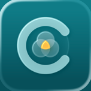

CrisolEnglishPolítica de privacidad
Vigente desde la versión 1.3 de Crisol (FECHA_DE_PUBLICACIÓN). Versión anterior: 17 de octubre de 2026.
En resumen: Crisol no recopila tus datos. Lo que cargás se guarda en tu dispositivo y, si tenés Premium con la sincronización con iCloud activada, también en tu iCloud privado. La app no tiene servidores propios, no usa publicidad ni herramientas de análisis, y no comparte información con terceros.
Quién es responsable
Crisol es una app desarrollada por Ari Rostkier, en Uruguay. Para cualquier consulta sobre privacidad escribinos a crisol.app.soporte@gmail.com.
Qué datos usa la app y dónde quedan
- Lo que cargás (cuentas, saldos, tarjetas, movimientos y sus comprobantes, cuotas, recurrencias, comercios, productos y tus actividades —trabajo, empresa o alquiler— con sus cobros, descuentos e impuestos): se guarda en tu dispositivo y, si usás la sincronización con iCloud, también en tu iCloud privado (ver más abajo). Nadie más, ni nosotros, tiene acceso.
- Tarjetas: la app nunca pide ni guarda el número completo de una tarjeta; como mucho, los últimos cuatro dígitos que elijas cargar para reconocerla.
- Preferencias: las de cada equipo (si ocultás los importes, el bloqueo o el lado del botón «+») se guardan en ese dispositivo y no se sincronizan. Las que hacen a tus datos (la cuenta por defecto de cada moneda, el orden de las secciones y los impuestos que configuraste) viajan con tus datos y, si usás iCloud, también se sincronizan.
Sincronización con iCloud
Es parte de Crisol Premium. Al tener Premium se activa sola (la app te avisa) y la podés apagar cuando quieras en Ajustes › iCloud. Sirve para ver los mismos datos en tus equipos con la misma cuenta de Apple.
- Tus datos se guardan en la base de datos privada de tu cuenta de iCloud. La administra Apple, según sus condiciones de iCloud: ni nosotros ni nadie más tiene acceso.
- Si la apagás o vence Premium, deja de sincronizar: cada equipo conserva su copia y lo que está en iCloud queda guardado hasta que lo borres.
Cámara y fotos
- Escanear tickets: si usás la cámara o elegís una foto, el texto del ticket se lee en tu dispositivo. La imagen se descarta, salvo que elijas guardarla como comprobante (ver abajo).
- Comprobantes (opcional, con Premium y la sincronización con iCloud): si adjuntás a un movimiento una foto o un PDF, se guarda en tu iCloud privado, junto a tus datos. En el equipo solo queda una copia de lo que abrís, que se borra al día. Las fotos se achican antes de guardarse. Podés quitar un comprobante, o borrarlos todos en Ajustes › iCloud.
- «Visible mientras mirás» (opcional): si lo activás, la cámara frontal se usa para detectar si hay una cara mirando la pantalla y cuántas, y así mostrar u ocultar los importes; también estima la luz del ambiente, para avisarte cuando hay demasiado poca para verte. Ese análisis ocurre en el momento y en tu dispositivo: no se guardan imágenes ni datos de tu cara, no se envían a ningún lado y no se usan para ningún otro fin, incluidos publicidad o análisis.
Face ID, Touch ID y código
Si activás el bloqueo, o al mostrar los importes ocultos (opción que podés apagar en Ajustes › Bloqueo y privacidad), la app le pide a iOS que confirme tu identidad. La app nunca recibe ni guarda tus datos biométricos: solo recibe la respuesta de iOS (confirmado o no).
Notificaciones
Los recordatorios de vencimientos se programan en tu dispositivo. Solo los activás si querés y podés desactivarlos en cualquier momento desde Ajustes de iOS.
Sugerencias con Apple Intelligence
Si la usás, la sugerencia de categorías para los productos de un ticket se hace con el modelo de Apple Intelligence que funciona en tu dispositivo. Solo recibe los nombres de los productos y de tus categorías.
Compras y suscripción
La suscripción a Crisol Premium la procesa Apple a través del App Store. No recibimos tus datos de pago. Apple puede compartirnos información agregada y anónima de ventas, según sus propias políticas.
Rastreo y terceros
Crisol no te rastrea entre apps ni sitios web, no muestra publicidad, no usa herramientas de análisis de terceros y no vende ni comparte datos.
Cómo borrar tus datos
Para borrar todo desde la app: Ajustes › Zona de peligro › Borrar todos los datos. Si usás la sincronización con iCloud, se borra también de iCloud y de tus otros equipos.
También podés eliminar la app, que borra lo que está en ese dispositivo. Si usaste la sincronización con iCloud, borrá lo de iCloud desde Ajustes de iOS › tu nombre › iCloud › Administrar almacenamiento › Crisol.
Menores de edad
Crisol no está dirigida a menores de 13 años y no recopila datos de nadie, incluidos menores.
Tus derechos
Como no recopilamos datos personales, no tenemos información tuya para consultar, corregir o borrar. Si tenés una duda o un pedido relacionado con la Ley N.º 18.331 de Protección de Datos Personales de Uruguay, escribinos.
Cambios en esta política
Si cambia la forma en que la app trata datos, vamos a actualizar esta página y la fecha de vigencia antes de que el cambio llegue a la app.